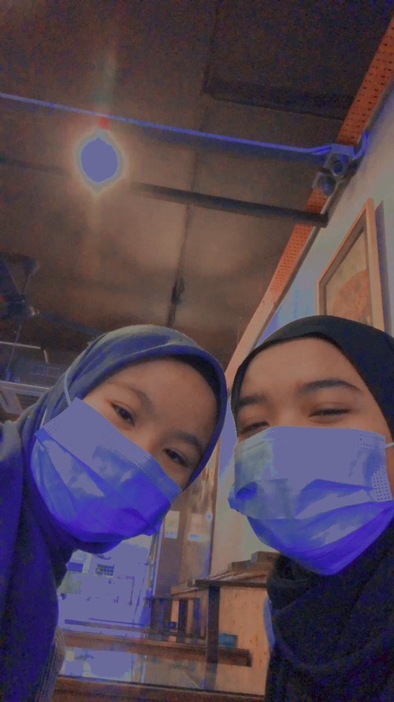
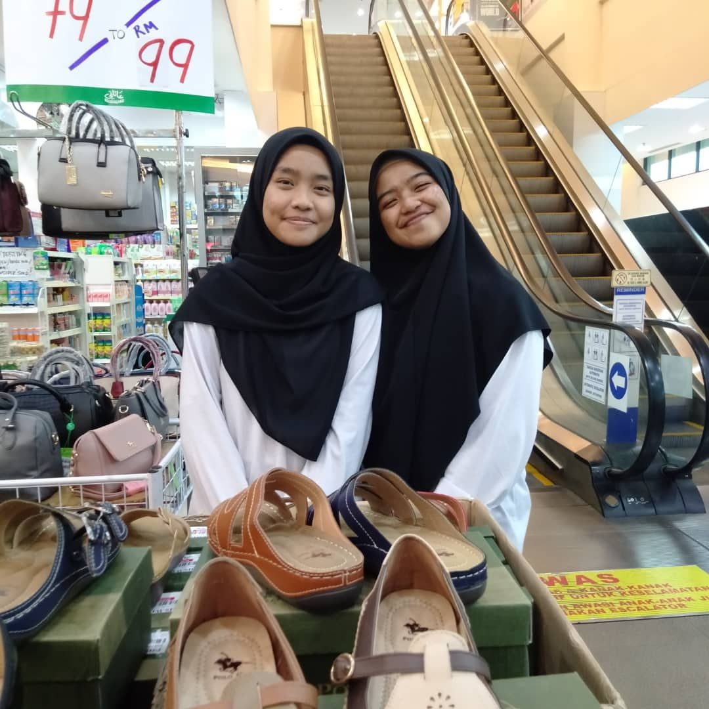
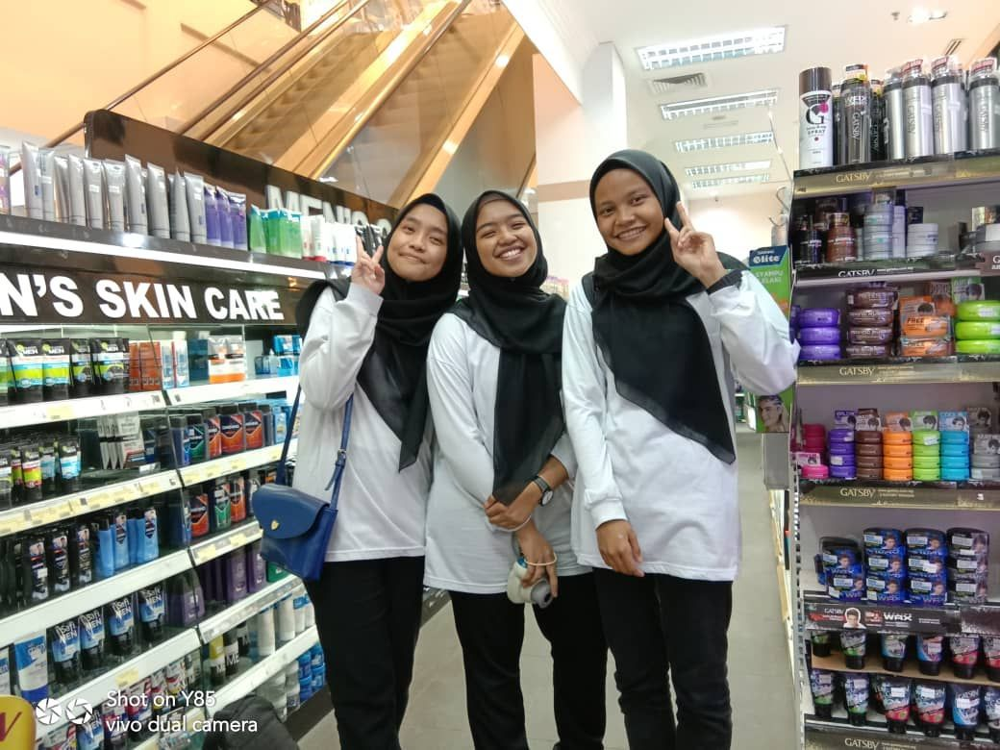
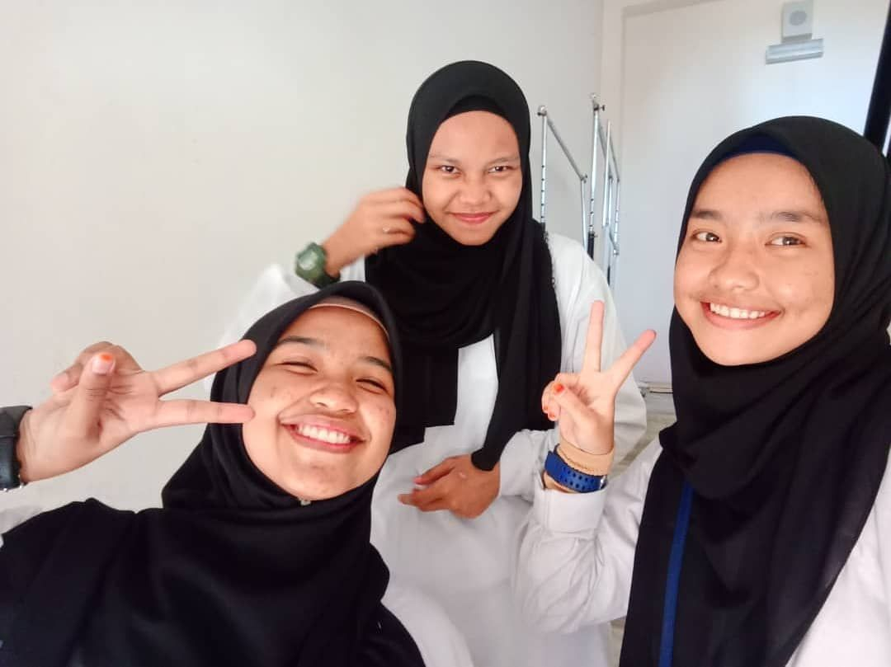
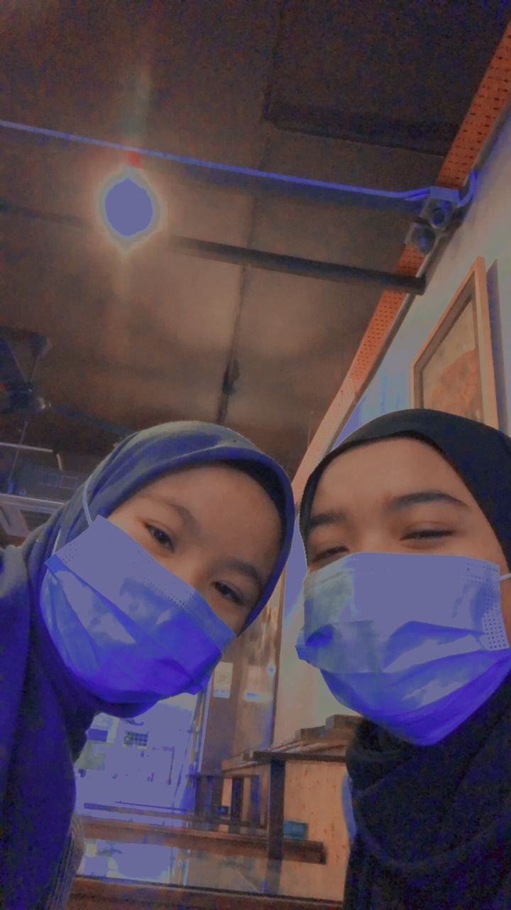
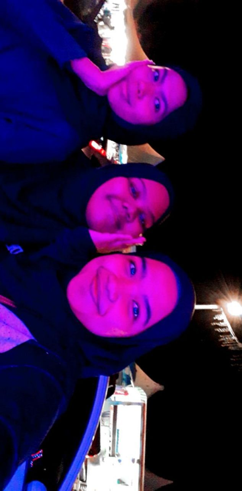
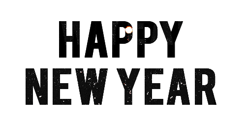

My Experience
For this page I will recount the sweetest experiences I have had and rarely do in my entire life. This experience is related to my life, namely:
- Become a part -time worker as a promoter
- Becoming a part -time worker as a waiter
- Celebrate the new year with new friends from UiTM
Become a part -time worker as a promoter

In early 2019, while waiting for the SPM 2018 results to come out, my friend and I planned to seek work experience. It took a few days for me and a friend to get a job as part -time workers. With the help of a friend who has worked at the place for a long time, I had the opportunity to gain the work experience. Initially, my friend and I had to attend an interview and fill out a form given to register as a part -time employee at a supermarket in Melaka. Like the title above, I had the opportunity to be a part -time employee as a promoter of women’s shoes and handbags. My working hours are carried out a week before fasting until a week after Eid. During that period various bitter and sweet memories I have gone through. I learned how to promote products to customers, treat customers in the right way, interact confidently and also feel the results of my own hard work and give gifts to family members using the salary earned. In addition, I also had the opportunity to meet more new acquaintances and until now we are still in touch.
-----------------------------------------------------------------------------------------------------------------------------------------------------------------------------------------------------------------------------------

---------------------------------------------------------------------------------------------------------------------------------------------------------------------------------------------------------------------
Celebrate the new year with new friends from UiTM

On 31 Dec 2019, at 11 pm, I and 4 other friends planned to rent a vehicle and go out to celebrate the new year in Melaka. This was a very gratifying experience for me as I never had a chance to hang out with friends at night. We visited Klebang Beach, Melaka to see the fireworks that will be held at exactly 12 midnight. After finishing, we rested and took a friend at his house while on the way to UiTM Rembau. But before returning home we stopped in Port Dickson to spend time together by sharing stories or a few things like, sad, bitter, sweet that we went through when we were at school before while waiting for dawn. After dawn we left for Rembau and stopped for breakfast before returning to UiTM Rembau. This was the 1 in 1000 experience I have ever had and will never forget. Through this experience the intimacy of our friend’s relationship is closer even though now the pandemic is spreading. In the absence of such memories it may be quite difficult for us to interact to better understand each other even online.
